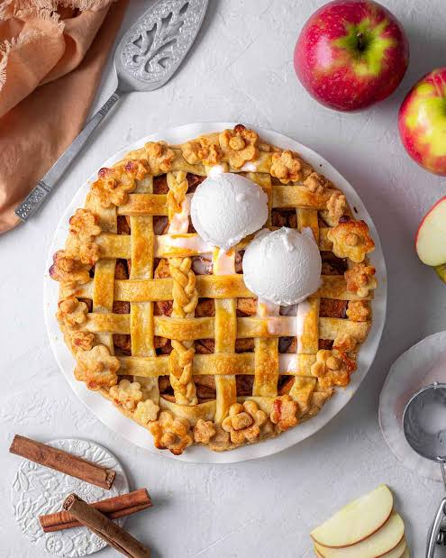

Apple Pie Recipe

Description
This pie keeps it simple with a flaky butter or shortening-based crust and a lightly sweetened
filling that’s spiced with cinnamon and thickened with flour. To make this pie, you’ll need:
ingredients:
- All-purpose flour
- Unsalted butter
- Kosher salt
- Tart apples
Steps
- Mix together flour, butter, and salt in a large bowl with your fingertips until butter is well incorporated
- Let 1 disk stand at room temperature about 5 minutes. Roll into a 12-inch circle and fit into a 9-inch pie plate. Chill.
- Preheat oven to 425°F with oven rack in lowest position. Stir together apples, sugar, flour, cinnamon, and salt.
- Roll remaining disk to a 12-inch circle. Cut into 12 strips and arrange in lattice pattern over apples. Trim and crimp edges.
- . Place pie onto a rimmed baking sheet. Bake 15 minutes. Reduce temperature to 350°F and bake 45 minutes.Bake another 30 minutes
Go Back To Home